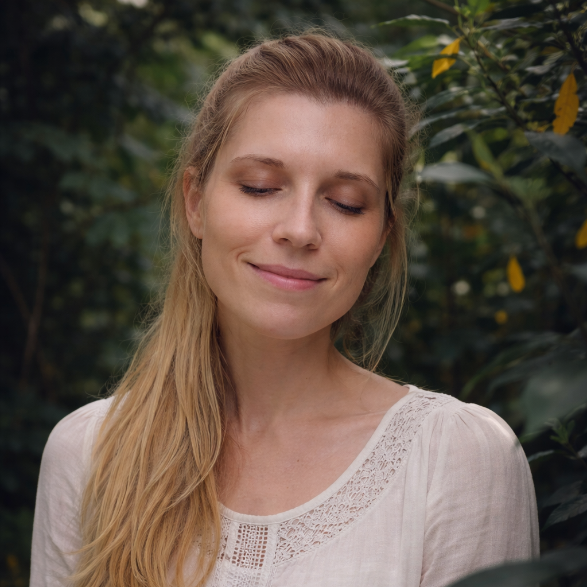

Ich begleite dich auf deinem Weg zu mehr Lebensfreude, Ruhe und innerer Balance.
Hier findest du kostenlose Meditationen – unter anderem eine 4-Tage-Meditationsreihe für Erwachsene, damit du auftanken, loslassen und einfach wieder du selbst sein kannst.
Auch für unsere Kinder, die unser wertvollstes Gut sind, gibt es eine liebevoll geführte 3-Tage-Meditationsreihe, damit auch sie Entspannung, Vertrauen und innere Stärke erleben dürfen.
Denn Meditation nährt die Seele – und genauso wichtig ist es, auf den Körper zu achten. Darum erhältst du hier außerdem verständliche Informationen zur Nährstoffbalance und wie du deinen Körper sanft und natürlich unterstützen kannst.
Ich freue mich, wenn du dabei bist und dir diese kleinen Auszeiten schenkst 🌸